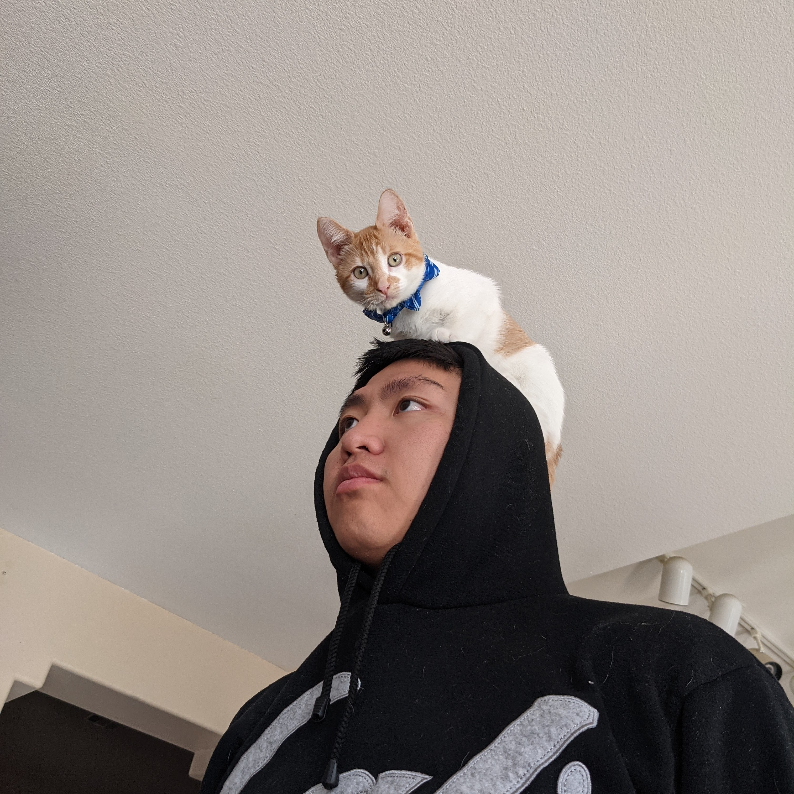

I am an aspiring, soon-to-be Web Dev looking to get some great work experience with an awesome team.
I call Las Vegas, Nevada my home.
And yes, that is a cat on my head. I realized rummaging through my photos that I do not have a better self-portrait, but that will be solved in the next version of this site.
I am currently enrolled at The University of Nevada, Las Vegas for computer science finishing out my degree in computer science. I am now trying to enroll in Thinkful to get closer to the industry. Before Web Dev, I worked with children affected by Autism Spectrum Disorder. I was part of a great team doing great work. I wish to continue this trend, and hopefully contribute back to the Web Dev and mental health communities.
My other interests include:
- creating aquariums
- gardening
- hiking
- building useful spreadhsheets
- gaming